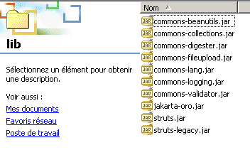

8. 创建插件
可以创建称为插件的应用程序，这些插件会在 Struts 应用程序启动时加载，并在关闭时卸载。这通常允许在应用程序启动时进行初始化，并在关闭时释放资源。这些操作也可以通过扩展控制器中的 ActionServlet 类来实现，这正是上一应用程序中所采用的方法。插件是该解决方案的一种替代方案。插件可以是一个比简单环境初始化更复杂的应用程序。 我们在介绍声明式验证规则的那一课中曾看到过一个示例。插件在 Struts 配置文件中进行声明。ValidatorPlugIn 在使用它的应用程序的 struts-config.xml 文件中声明如下：
<plug-in className="org.apache.struts.validator.ValidatorPlugIn">
<set-property
property="pathnames"
value="/WEB-INF/validator-rules.xml,/WEB-INF/validation.xml"
/>
</plug-in>
接下来我们将介绍一个使用插件的 Struts 应用程序。
8.1. Struts /plugin1 应用程序的配置
我们建议构建一个配置如下所示的 Struts 应用程序 /plugin1：
web.xml
<?xml version="1.0" encoding="ISO-8859-1"?>
<!DOCTYPE web-app
PUBLIC "-//Sun Microsystems, Inc.//DTD Web Application 2.3//EN"
"http://java.sun.com/dtd/web-app_2_3.dtd">
<web-app>
<servlet>
<servlet-name>action</servlet-name>
<servlet-class>org.apache.struts.action.ActionServlet</servlet-class>
<init-param>
<param-name>config</param-name>
<param-value>/WEB-INF/struts-config.xml</param-value>
</init-param>
<load-on-startup>1</load-on-startup>
</servlet>
<servlet-mapping>
<servlet-name>action</servlet-name>
<url-pattern>*.do</url-pattern>
</servlet-mapping>
<taglib>
<taglib-uri>/WEB-INF/struts-bean.tld</taglib-uri>
<taglib-location>/WEB-INF/struts-bean.tld</taglib-location>
</taglib>
<taglib>
<taglib-uri>/WEB-INF/struts-logic.tld</taglib-uri>
<taglib-location>/WEB-INF/struts-logic.tld</taglib-location>
</taglib>
</web-app>
我们不会过多讨论这个文件，因为它是标准的。
struts-config.xml
<?xml version="1.0" encoding="ISO-8859-1" ?>
<!DOCTYPE struts-config PUBLIC
"-//Apache Software Foundation//DTD Struts Configuration 1.1//EN"
"http://jakarta.apache.org/struts/dtds/struts-config_1_1.dtd">
<struts-config>
<plug-in className="istia.st.struts.plugins.MyPlugin">
<set-property property="passwdFileName" value="data/passwd"/>
<set-property property="groupFileName" value="data/group"/>
</plug-in>
</struts-config>
我们只添加了一个部分，即插件部分。此处使用的 <plug-in> 标签的属性如下：
插件类名 | |
允许使用 (键, 值) 对初始化插件 |
本应用的目的是演示插件如何获取其初始化参数，并将其提供给共享同一应用上下文的其他对象。我们将使用一个简单的 JSP 视图来显示插件的初始化值，这也解释了为何配置文件中没有 action 元素。
8.2. 插件的 Java 类
作为 Struts 应用程序插件的 Java 类必须实现 org.apache.struts.action.PlugIn 接口。该实现需要编写两个方法：
- public void init(ActionServlet servlet, ModuleConfig conf)
- public void destroy()
当 Struts 应用程序加载时，其控制器会实例化 struts-config.xml 文件中声明的所有插件，并为每个插件执行 init 方法。插件将在该方法中完成初始化工作。 在此，我们将简单地读取插件的初始化参数，并将它们放入应用上下文中，以便应用程序中的所有其他对象都能使用这些参数。当应用程序被卸载时，控制器将为每个已加载的插件执行 destroy 方法。此时应释放不再需要的资源。在此，我们无需进行任何操作。
类代码如下：
package istia.st.struts.plugins;
import javax.servlet.ServletException;
import org.apache.struts.action.ActionServlet;
import org.apache.struts.action.PlugIn;
import org.apache.struts.config.ModuleConfig;
import org.apache.struts.config.PlugInConfig;
public class MyPlugin implements PlugIn {
// method called when application context is deleted
public void destroy() {
}
// method called on initial creation of application context
public void init(ActionServlet servlet, ModuleConfig conf)
throws ServletException {
// class name of this object
String className=this.getClass().getName();
// plug-in list
PlugInConfig[] pluginConfigs = conf.findPlugInConfigs();
// explore plugins to find the right one
// which is named after this class
boolean trouvé=false;
for (int i = 0; ! trouvé && i < pluginConfigs.length; i++) {
// plugin name
String pluginClassName=pluginConfigs[i].getClassName();
// if it's not the right plugin, continue
if(! pluginClassName.equals(className)) continue;
// it's the right one - you memorize its properties in context
servlet.getServletContext().setAttribute("initialisations",pluginConfigs[i].getProperties());
trouvé=true;
}//for i
} //init
} //class
请注意以下几点：
- init 方法接受一个名为 conf（类型为 ModuleConfig）的参数，该参数提供对 struts-config.xml 文件内容的访问。
- [ModuleConfig].findPlugInConfigs() 方法会从 Struts 配置文件中检索所有 <plug-in> 部分，并以 PlugInConfig 对象数组的形式返回。
- PlugInConfig 类表示配置文件中的一个 <plug-in> 部分。通过 [PlugInConfig].getProperties 方法，我们可以以 java.util.Map 字典的形式访问该部分中的 <set-property> 元素。
- 插件的属性字典被放置在应用程序上下文中。
- 由于可能存在多个插件，我们需要找到我们感兴趣的那个。它就是与正在执行的类同名的那个。
在此，我们选择将整个字典放入上下文中。我们本可以选择直接使用它。以下代码片段演示了一种实现方式：
Map initialisations = pluginConfigs[i].getProperties();
// iterate over dictionary entries
Iterator entrées = initialisations.entrySet().iterator();
while (entrées.hasNext()) {
// retrieve current input (key,value)
Map.Entry entrée = (Map.Entry) entrées.next();
String clé = (String) entrée.getKey();
String valeur = (String) entrée.getValue();
// exploit (key,value)
//...
}
8.3. infos.jsp 视图的代码
infos.jsp 视图负责显示插件属性字典的内容，该字典已放置在应用程序上下文中。由于 infos.jsp 视图是该上下文的一部分，因此它可以访问该上下文。其代码如下：
<%@ taglib uri="/WEB-INF/struts-bean.tld" prefix="bean" %>
<%@ taglib uri="/WEB-INF/struts-logic.tld" prefix="logic" %>
<html>
<head>
<title>Plugin</title>
</head>
<body>
<h3>Infos du plugin<br></h3>
<table border="1">
<tr>
<th>Clé</th><th>Valeur</th>
</tr>
<logic:iterate id="element" name="initialisations">
<tr>
<td><bean:write name="element" property="key"/></td>
<td><bean:write name="element" property="value"/></td>
</tr>
</logic:iterate>
</table>
</body>
</html>
注：
- 我们使用 struts-logic 和 struts-bean 标签库
- <logic:iterate> 标签允许我们显示由插件的 init 方法放置在上下文中的初始化字典。name 属性指定要迭代的对象。该对象应为集合、迭代器等类型。系统将在所有作用域（页面、请求、会话、上下文）中搜索该对象。 在此示例中，该对象将在上下文作用域中被找到。id 参数用于在迭代过程中为集合的当前元素命名。在此，在 <logic:iterate> 标签的主体中，element 将代表字典的当前元素。该元素由一个 java.util.Map.Entry 对象表示，本质上是字典中的一个 (键, 值) 对。
- 在 <logic:iterate> 标签的正文中，我们通过 (<bean:write>) 显示当前元素 element 的内容。该元素被视为一个具有两个属性的对象：键和值。这两个属性都会被显示出来。
8.4. 部署
应用程序上下文在 Tomcat 的 server.xml 配置文件中进行定义：
<Context path="/plugin11" reloadable="true" docBase="E:\data\serge\web\struts\plugins\1" />
应用程序的目录结构如下：
  |  | ||
 | |||
8.5. 测试
我们启动 Tomcat 并访问 URL http://localhost:8080/plugin1/infos.jsp：

我们观察到，infos.jsp 视图已通过插件成功访问了应用程序上下文中存储的信息。
8.6. 结论
我们已经演示了如何使用插件初始化一个 Struts 应用程序。这可以作为派生 ActionServlet 类以实现相同结果的一种替代方案。